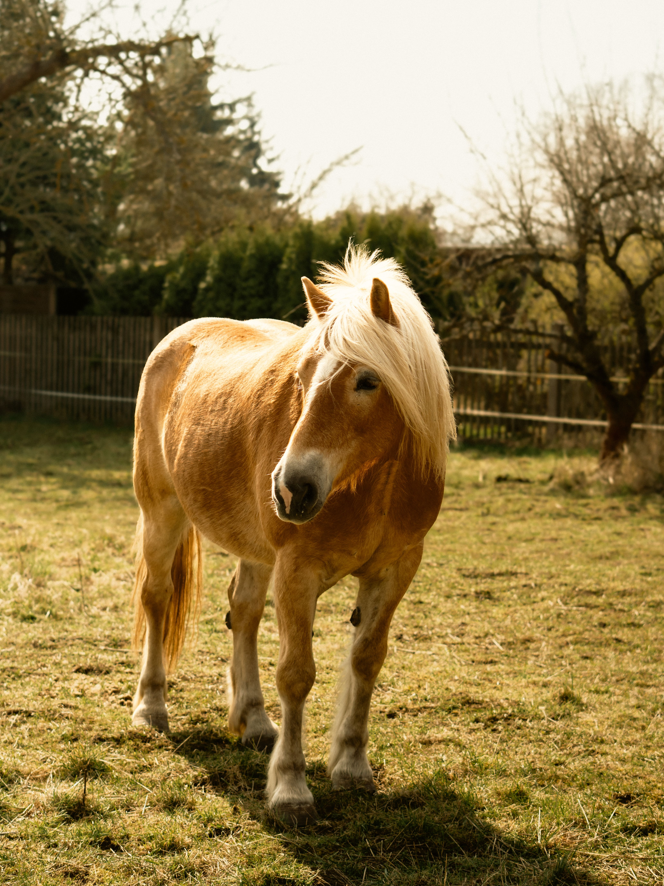

Sable

Rasa: Koń Fryzyjski
Sable to spokojna i dostojna klacz, która lubi spokojne przejażdżki i pracę z jeźdźcami.
Szkółka jeździectwa i stadnina koni
Wrzosowisko to miejsce stworzone z myślą o miłośnikach koni, jeździectwa i natury. Nasza stadnina łączy naukę jazdy konnej z możliwością spędzania czasu w spokojnym, naturalnym otoczeniu.
Niezależnie od tego, czy dopiero zaczynasz swoją przygodę z końmi, czy masz już doświadczenie, znajdziesz tutaj zajęcia dopasowane do swoich umiejętności i zainteresowań.
Poznaj naszą stadninę, konie oraz ofertę zajęć jeździeckich.
Poznaj konie, które mieszkają w naszej stadninie i towarzyszą nam podczas jazdy.
Rasa: Koń Fryzyjski
Sable to spokojna i dostojna klacz, która lubi spokojne przejażdżki i pracę z jeźdźcami.

Rasa: Haflinger
Aspen to przyjazny i odważny koń, który lubi jazdę terenową oraz spokojne przejażdżki.

Rasa: Tinker
Freya to łagodna i cierpliwa klacz, która dobrze sprawdza się podczas nauki jazdy i zajęć dla początkujących.

Rasa: Hanowerski
Adler to energiczny i skupiony ogier, który dobrze sprawdza się podczas treningów ujeżdżenia i skoków.
W Wrzosowisku oferujemy zajęcia dla osób o różnym poziomie doświadczenia.
Zajęcia dla początkujących oraz osób, które chcą rozwijać swoje umiejętności jeździeckie.
Spokojne przejażdżki w otoczeniu natury dla osób, które chcą odpocząć od codzienności.
Treningi ujeżdżeniowe i skoków dla bardziej doświadczonych jeźdźców.
Masz pytania dotyczące jazdy konnej lub naszej stadniny? Skontaktuj się z nami!
Telefon komórkowy:
000 000 000
Telefon stacjonarny:
00 000 00 00
E-mail:
kontakt@wrzosowisko.example
Miejscowość:
Wrzosowice
Ulica:
Nadrzeczna 15
Kod pocztowy:
00-000